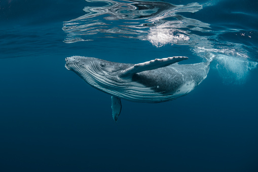
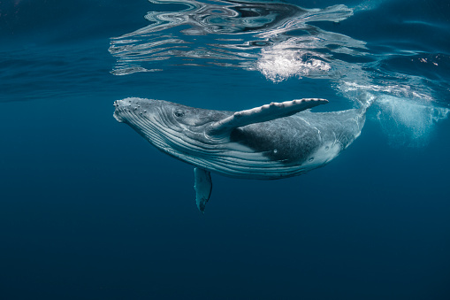
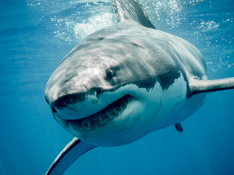
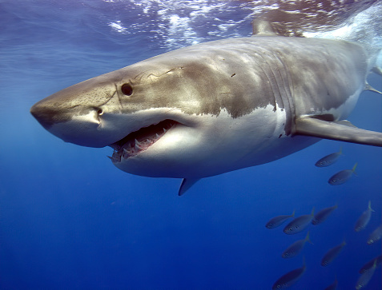
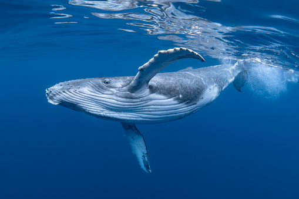
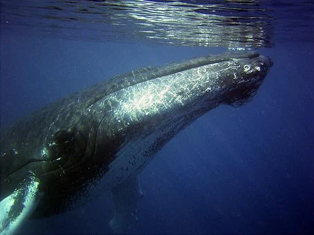

Jūra – didelis sūraus vandens telkinys, turintis sąlytį su vandenynu arba didelis sūrus ežeras. Vandens telkinių pavadinimas jūra yra sąlyginis, kadangi kai kurie ežerai (pvz., Negyvoji jūra) ar įlankos (pvz., Azovo jūra) vadinami jūromis, nors yra didesnių už juos, vadinamų ežerais (Tanganika) ar įlankomis (Gvinėjos įlanka). Kartais jūros terminas vartojamas kaip vandenyno sinonimas („už jūrų marių“).
 

Rykliai (Selachomorpha) – kremzlinių žuvų (Chondrichthyes) klasės antbūris. Jų skeletas sudarytas ne iš kaulo, bet iš kremzlės. Pasaulyje suskaičiuojama daugiau nei 500 ryklių rūšių, o patys rykliai atsirado daugiau nei prieš 350 milijonų metų. Didžioji dauguma ryklių yra plėšrūs. Rykliams būdinga labai gera uoslė, jie taip pat gerai jaučia vibraciją vandenyje.Ryklių dydis ir išvaizda labai skiriasi. Tarp išlikusių didžiausias ryklys yra bangininis ryklys, kuris yra ir didžiausia žuvis. Daug ryklių rūšių yra nykstančios, bet kai kurios tebegaudomos maistui arba sportinės žūklės metu. Žvejyboje sugautam rykliui reikia tuoj pat nudirti odą – kitu atveju jo mėsa bus sugadinta. Pasirodo, tam, kad išlaikytų aplinkos vandens ir savo paties druskingumo balansą, ryklys išskiria šlapimą pro savo odą.
 Banginiai (Cetacea) – žinduolių (Mammalia) porakanopių (Artiodactyla) būrio infrabūrys. Jam priklausantys gyvūnai visiškai prisitaikę gyvenimui vandenyje. Šnekamojoje kalboje banginiais vadinami visi šio infrabūrio atstovai, išskyrus delfinus ir jūrų kiaules. Banginius tirianti teriologijos šaka yra cetologija. Išskiriamos dvi grupės: ūsuotieji banginiai minta planktonu, moliuskais ir kitais bestuburiais, o dantytieji banginiai yra plėšrūs, minta žuvimis, kitais banginiais ir ruoniais. Visi banginiai gyvena jūroje, išskyrus kelias Upinių delfinų rūšis. Į vandenį šio infrabūrio žinduolių grupė persikėlė maždaug prieš 50 mln. metų, ankstyvajame eocene. Dėl aplinkos teršimo, žvejybos ir pramoninės banginių medžioklės daugelio banginių rūšių populiacijos yra ženkliai sumažėjusios.
 